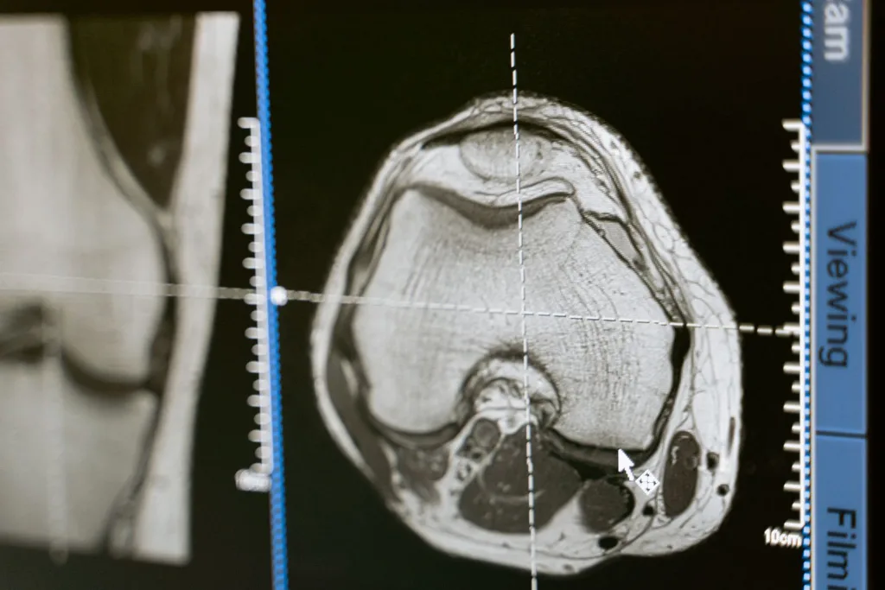
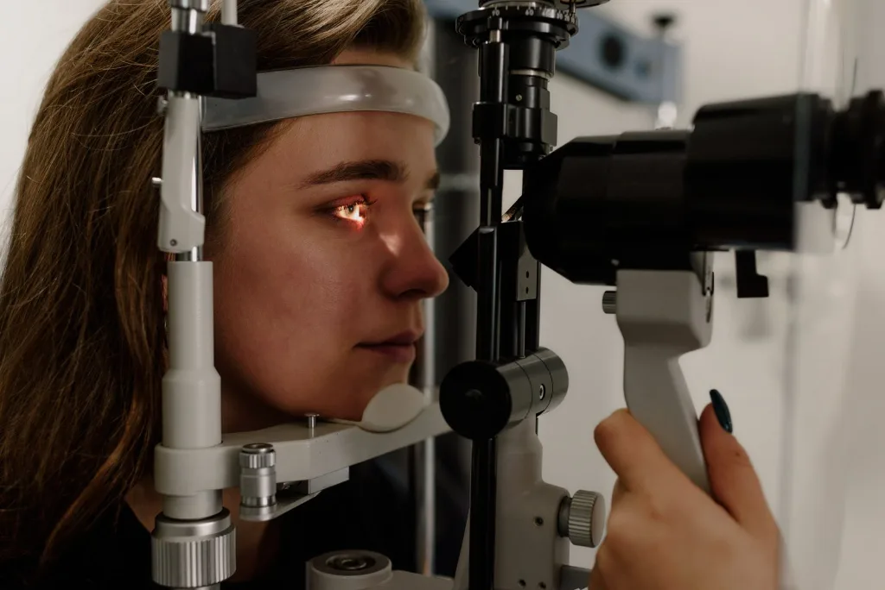
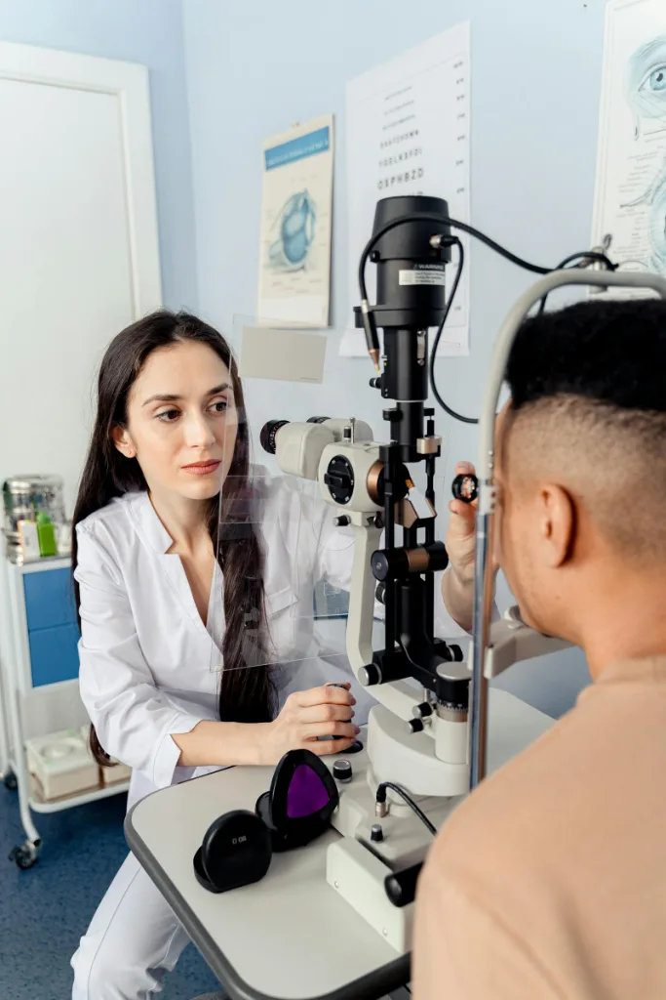
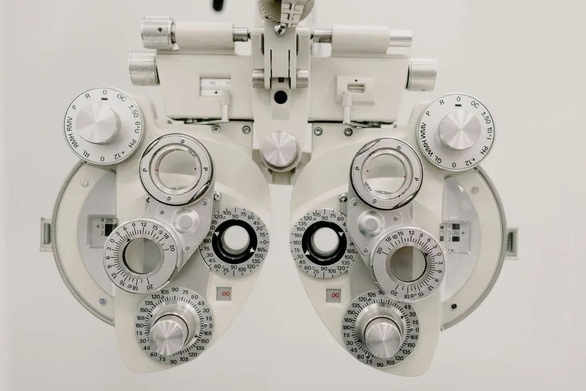
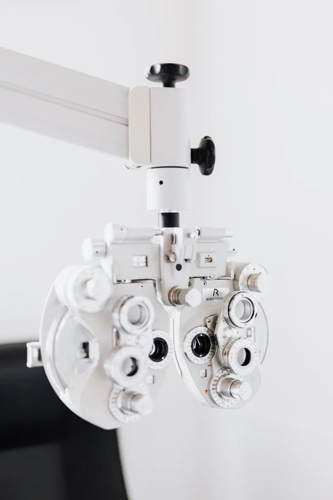

Modern Eye Care, Analyzed With Precision
Visualyze pairs advanced scanning technology with intelligent analysis — turning your vision into data we can read, explain, and act on. Smarter diagnostics, clearer answers.
Watch your vision become data
Every Visualyze scan streams into a live diagnostic readout — measured, modeled, and analyzed in real time before we walk you through it.
A smarter, more analytical way to care for your eyes.
Visualyze is built around one idea: your vision is data, and better data means better care. We capture high-resolution scans, analyze them with modern diagnostic tools, and translate the results into a clear, confident plan — so nothing is guessed and nothing is missed.
Advanced where it counts. Human where it matters. That's how we see smarter and care better.

Complete eye analysis, end to end
From precision exams to deep diagnostic imaging, every service is data-led and reviewed with analytical care.
Precision Eye Exams
Comprehensive, data-led vision and eye-health assessments measured to fine tolerances.
OCT Retinal Imaging
High-resolution cross-sectional scans surface subtle changes long before symptoms appear.
Glaucoma Analytics
Automated pressure tracking and visual-field mapping monitored over time, with trend analysis.
Corneal Topography
Detailed 3D surface mapping for sharper diagnoses and precisely fitted contact lenses.
Dry Eye Diagnostics
Quantified tear-film analysis and surface imaging to target treatment with accuracy.
Vision Analysis Reports
A clear, shareable digital report of every measurement — your eye health, made readable.

Technology that turns vision into data
We invest in the diagnostic platforms that measure what a standard exam can't — capturing precise data, then analyzing it to make early detection routine.
- 01
OCT Retinal Imaging
Micron-level cross-sections of the retina reveal structural change before it's ever felt.
- 02
Digital Slit-Lamp Analysis
High-magnification, documented imaging of every ocular structure for precise diagnosis.
- 03
Automated Visual Field Mapping
Algorithmic mapping of your full field of vision to track glaucoma and neural health.
- 04
3D Corneal Topography
Thousands of surface data points modeled for sharper fits and earlier answers.
Precision you can measure. Care you can feel.
The data drives the diagnosis — but people deliver the care. Here's what sets Visualyze apart.
// system metrics · last 12 months
Data-Driven
Every diagnosis is grounded in precise measurement and analysis — not guesswork or estimation.
Clearly Explained
We translate scans and metrics into plain language, so you always understand your results and options.
Faster Answers
Modern platforms mean results in minutes, with documented data you can track over time.
Scan → Analyze → Report → Plan
A precise, transparent pipeline — each stage runs in sequence so your results are complete, accurate, and easy to understand.
Scan
Quick, painless imaging on our modern diagnostic platforms, explained as we go.
captureAnalyze
Your data is measured and modeled for a clear, accurate picture of your eye health.
processReport
Every measurement is compiled into a clear, shareable digital report you can keep.
generatePlan
You leave with a confident, data-backed plan and clear next steps for your vision.
deliver

A modern eye clinic, engineered for clarity
Visualyze was founded on the belief that advanced eye care should be both smarter and more understandable. We pair precision diagnostic technology with clinicians who analyze the data carefully — and then explain it clearly.
The result is a clinic that feels genuinely modern and analytical, yet calm, human, and refreshingly easy to follow.
- Data-driven, analytically minded clinicians
- Advanced diagnostic and scanning platforms
- Clear digital reports you can keep and track
The platforms behind the precision
A closer look at the modern diagnostic technology that powers smarter, faster answers.

Precision that patients can feel
Real words from people who came in unsure — and left with data-backed clarity.
"They actually showed me the scan data and walked me through it. I finally understood my own eyes — it felt genuinely modern."
"The technology is clearly next-level, and the results were ready in minutes. Precise, fast, and never cold or confusing."
"I left with a digital report I could actually keep and track. This is what a smart, future-facing eye clinic should feel like."
Frequently asked questions
Clear, precise answers to the things patients ask us most.
A precise, unhurried analysis using our modern diagnostic platforms. We'll capture your scans, analyze the data, and explain every finding in plain language before recommending next steps — and you'll leave with a digital report.
We hold same-week appointments wherever possible. Book online in under a minute or call us, and our team will find a time that works for you.
Not at all. Our imaging — including OCT and visual-field mapping — is quick, painless, and non-invasive. We explain each step before it happens, so you're always comfortable and informed.
Yes. Every visit produces a clear digital report of your measurements and analysis, so you can keep it, share it with other providers, and track changes over time.
No. Whether you need a routine precision exam or ongoing analysis of a specific condition, the same data-driven approach applies — better measurement leads to better care at every level.
See smarter. Book your precision eye analysis.
Take the most intelligent step for your vision. Request an appointment and our team will confirm your slot — same-week availability fills fast.
- Quick, painless diagnostic scans
- Results and analysis in minutes
- A clear digital report to keep
Request received
Thank you — our team will confirm your Visualyze appointment within one business day.